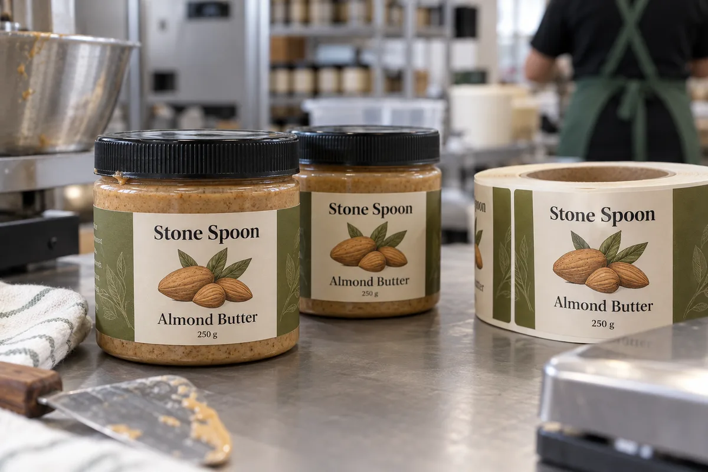

The PP jar is not a glass jar
The first question I would ask is not "matte or gloss?" It is what the jar wall is made of. Many nut-butter lines use molded polypropylene (PP), and a label construction that behaves well on glass may not anchor as easily to that surface. Avery Dennison's PET bottle technical note contrasts higher-energy PET with lower-energy PP and PE. That distinction is a reason to test on the actual jar, not proof that any particular adhesive will pass.
A composite buyer has two 250 g jars from different suppliers. They look identical on a sales sheet. One is PP and the other has a different surface finish. I would not approve one label stock against a catalogue photo; I would ask for both filled jars and run the same trial on each. The cost of a handful of samples is smaller than discovering edge lift after the first pallet is packed.
Keep the label below the lid and out of the messy zone
The shoulder below a wide screw lid can be attractive real estate for branding. It is also the area where hands grip, oil can collect and a paper edge can get rubbed. I prefer a straight, usable wall panel with a clear gap below the lid and above the base curve. Measure that panel after filling, because molded walls can bow subtly under product weight.
The fictional Stone Spoon jar in the photograph shows an illustrated front label on the straight wall. It is a placement example, not a food-label compliance proof. A retail-ready artwork file needs the buyer's actual ingredient, allergen, quantity, business and market review.
Paper looks good; film may clean more easily
If the jar is sold dry and handled gently, a textured paper can support the premium look. If stores and consumers repeatedly wipe oily jars, a properly specified film face and protected ink may be easier to keep presentable. That is a use-case decision, not a blanket statement that one material is "better." I would compare a few finished jars after deliberate lid opening, wiping and carton rubbing.
One mistake I would own as a label supplier is focusing only on peel strength on a clean empty jar. The purchaser is buying a pack that will be opened and handled. We should ask for the full sequence, including cleaning steps before labeling and whether the jars are hot-filled or cooled first.
What to send for a useful quote
Send the actual jar and lid, resin identification if available, a ruler photo of the straight wall, label dimensions, fill and cleaning sequence, order quantity by SKU, storage environment and artwork. Include one jar after normal filling, not only pristine components.
I would trial the proposed construction on that filled jar, then check edges after dwell, wiping and transport-style handling. If the label fails, first distinguish contaminated application from adhesive mismatch and from a face stock that is too stiff for the wall. Those fixes have different costs.
Our buying view
What we would decide first
Check the real jar plastic and the handling path before specifying a premium face stock. A short trial on the actual pack can settle that question before a full printed roll is ordered.
Related buyer guides
Frequently asked questions
Do nut-butter jars need a special adhesive?
It depends on the actual jar resin and surface, labeling conditions and handling. Trial the complete construction on filled jars.
Can I use a paper label on an oily product?
Yes in some dry, controlled use cases, but compare its appearance after lid handling and wiping with a suitable film alternative.
Review your label specification
Send the real package, dimensions, order quantity, labeling stage, storage conditions and artwork. We can discuss a practical material and proof route.